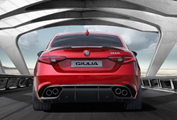
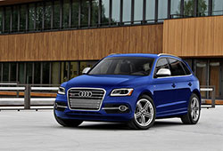
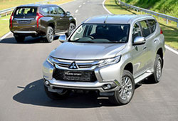

資料來源：UDN發燒車訊
- 最新車聞
- 試駕精選
- 國際車訊
- 中古車訊

- 試駕精選1
- 試駕精選2
- 試駕精選3

2017-08-31 15:50
增加競爭籌碼 2018年式Ford Mondeo EcoBoost 240試駕
有別於過往市場主流的地位，近年來台灣市場四門房車的市占率逐漸遭休旅車瓜分，更早來說，中大型四門房車就早已經透露了這樣的趨勢，銷售數字逐年下滑，國產車業者在生產成本考量下也接連退守，由原先的國產轉為進口。

2017-08-31 15:50
Audi Q2跨界有型 客製打造獨有個性
跨界是一種車界時尚，在這個時尚舞台裡當然少不了Audi。全新上市的Audi Q2突破A系列與Q系列的界線，在外貌上自創一格，緊抓住年輕世代的口味；功能上兼具操控樂趣及數位娛樂，不失豪華車品牌該有的奢華元素。

2017-08-31 15:50
不只好看更是有料 VOLVO V90 / V90 Cross Country試駕
近年來休旅車熱潮狂掃全球市場，台灣自然也不例外，成為成長最快速的級距，但畢竟不是人人都喜歡開底盤及重心較高的休旅車，歐洲市場相當常見的旅行車，近年在台灣市場也逐步獲得青睞，成為台灣車主新寵。
1
23萬美元落槌 福特《Ford Apollo Edition Mustang》順利售出 23萬美元落槌
2
23萬美元落槌 福特《Ford Apollo Edition Mustang》順利售出 23萬美元落槌
3
23萬美元落槌 福特《Ford Apollo Edition Mustang》順利售出 23萬美元落槌
 4
423萬美元落槌 福特《Ford Apollo Edition Mustang》順利售出 23萬美元落槌
5
23萬美元落槌 福特《Ford Apollo Edition Mustang》順利售出 23萬美元落槌